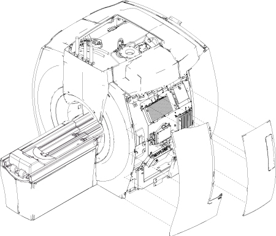
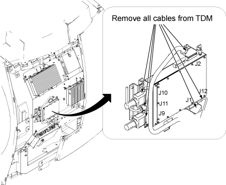
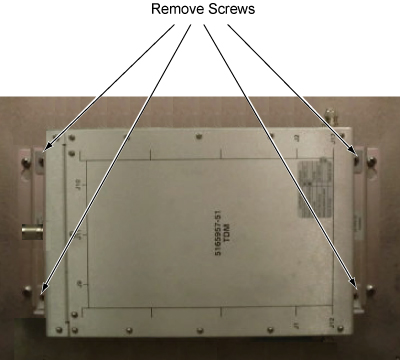

Operating Documentation
Direction 5670006, Rev# 1
Discovery MR750w GEM Service Methods
Module Version 3.0, Version Date 10/18/11
Operating Documentation |
| Required Persons | Preliminary Reqs | Procedure | Finalization |
|---|---|---|---|
| 1 | Not Applicable | 30 mins | 30 mins |
| Item | Qty | Effectivity | Part# | Manufacturer | |
|---|---|---|---|---|---|
| Non-magnetic Phillips Screwdriver | 1 | - | - | - | |
| Basic Hand Tool Set | 1 | - | - | - | |
| Item | Qty | Effectivity | Part# | Manufacturer | |
|---|---|---|---|---|---|
| Transient Detection Module (TDM) | 1 | - | Refer to FRU Manual | - | |
| ||||
| When removing and or replacing the Transient Detection Module (TDM) on the side of the magnet, ensure that the module is as far away from the magnet as possible when moving it. | ||||
Perform LOTO for Penetration Cabinet before the TDM unit is replaced.
Turn off the Scan Room Power Supply (SRPS) at the Penetration Cabinet.
Remove Left Side Center Cover and Left Side Rear Cover. Refer to Side and Top Cover Removal and Installation.
Illustration 1: Left Side Center Cover and Left Side Rear Cover

Disconnect all cables connected to the TDM. See Illustration 2.
| NOTE: | Ensure that you remove J1 before you remove J12 in order to prevent damage to the end of the cable connected to J12. |
Illustration 2: TDM Cable Connections

Remove the four (4) screws holding the TDM to the magnet. See Illustration 3.
Illustration 3: Remove TDM Screws

| ||||
| Strong Magnetic Field! | ||||
| The module has no ferrous material and will not be attracted to the magnet, but eddy currents setup by the strong magnetic field interacting with the Transient Detection Module (TDM) can make it very hard for one person to handle. | ||||
| When removing and or replacing the Transient Detection Module (TDM) on the side of the magnet, always do so by keeping the module as far away from the magnet as possible while moving it . |
While carrying the module out of the magnet room, make sure to stay as far away from the magnet as possible.
While carrying the module into the magnet room, make sure to stay as far away from the magnet as possible.
| ||||
| Strong Magnetic Field! | ||||
| The module has no ferrous material and will not be attracted to the magnet, but eddy currents setup by the strong magnetic field interacting with the Transient Detection Module (TDM) can make it very hard for one person to handle. | ||||
| When removing and or replacing the Transient Detection Module (TDM) on the side of the magnet, always do so by keeping the module as far away from the magnet as possible while moving it . |
Secure the module to the magnet by tightening the four (4) screws provided.
Attach all cables that were previously removed. See Illustration 2.
| NOTE: | To prevent damage to the cables, ensure to connect J12 before you connect J1. |
Replace side cover.
Restore the power using the LOTO for the PEN Cabinet.
Complete a test scan to make sure the system is functional.
Run TNS Datapath Diagnostics to confirm there are no remaining issues.